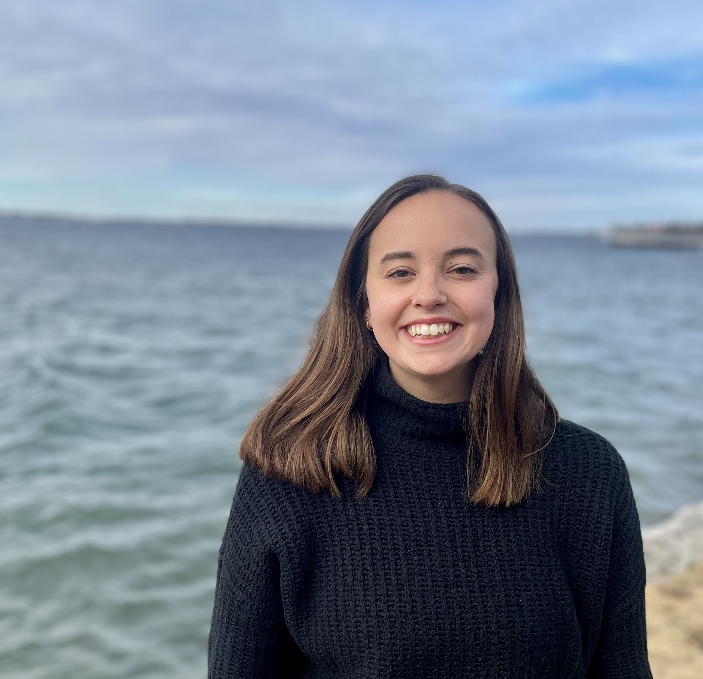

I am currently a fifth year PhD Candidate at Cornell University, working with Daniel Halpern-Leistner. Before coming to Cornell, I completed my undergraduate degree at Queen's University (Kingston). I am fortunate to be supported by an NSERC PGS-D award.
I'm interested in algebraic geometry, specifically moduli theory, algebraic stacks and enumerative geometry.
My email is srs382 at cornell dot edu. My CV is here.
I will be on the job market for postdoc positions in Fall 2026.
Strictly Semistable Quasimaps on the Wall (2026). [ArXiv][Poster]
Spring 2026: Math 1340, Strategy, Cooperation and Conflict (Cornell University) Fall 2025: Math 1110, Calculus I (Cornell University), Instructor of Record Spring 2025: Ithaca High School Math Seminar Instructor Fall 2022, Spring 2023: Math 2940, Linear Algebra for Engineers (Cornell University) Fall 2020, Spring 2021: Math 110, Linear Algebra (Queen's University)